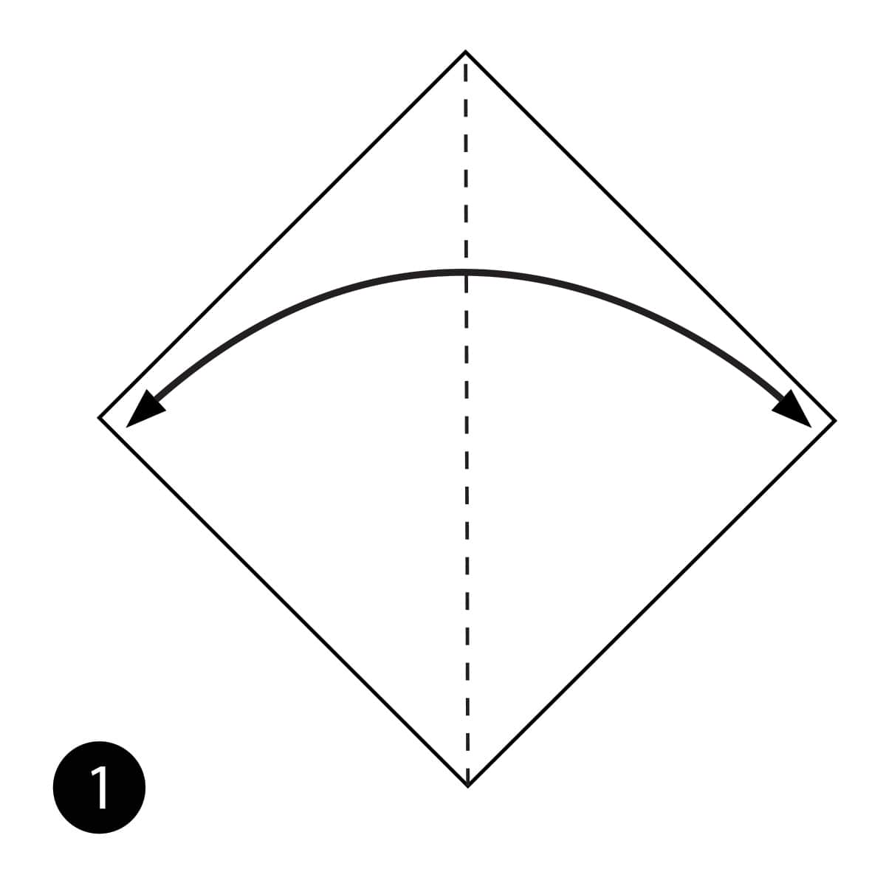
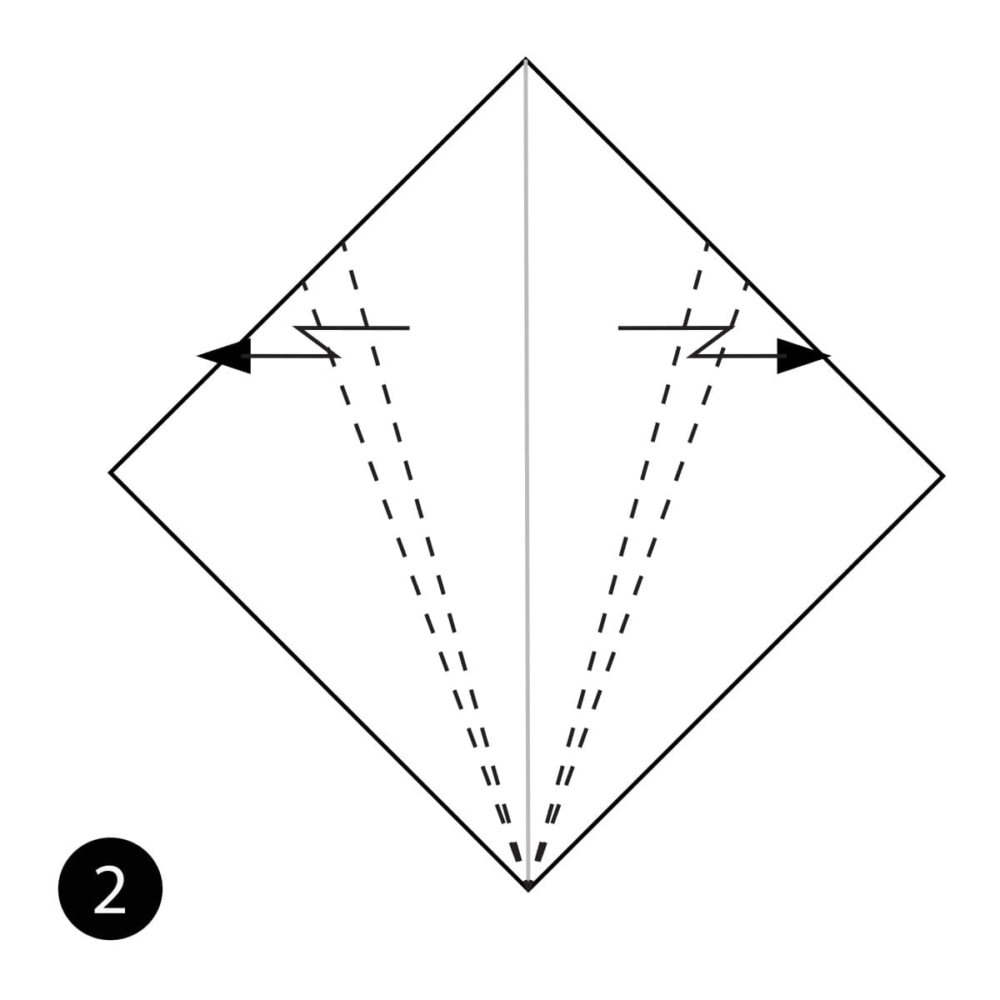
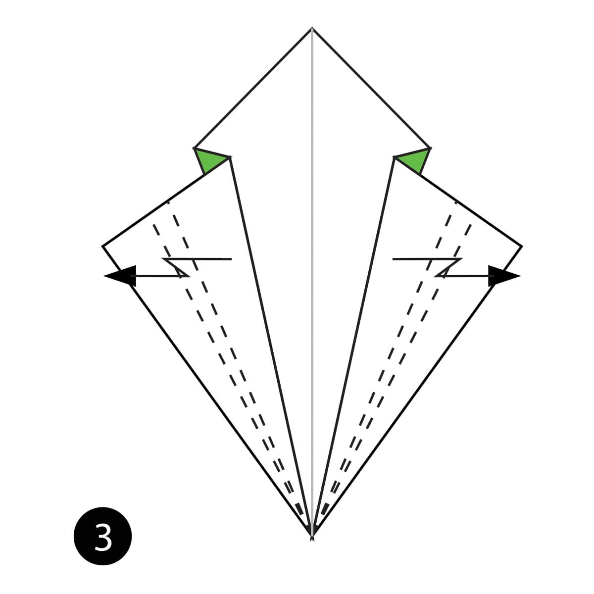
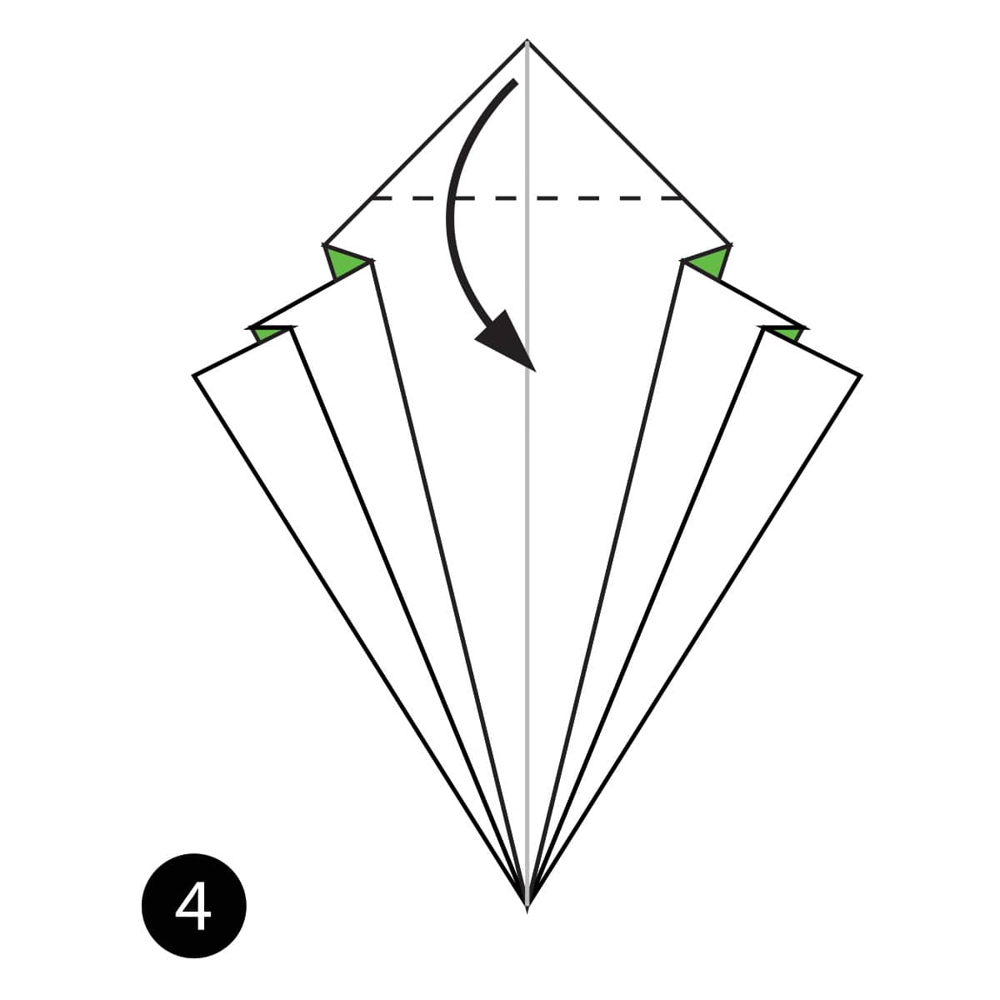
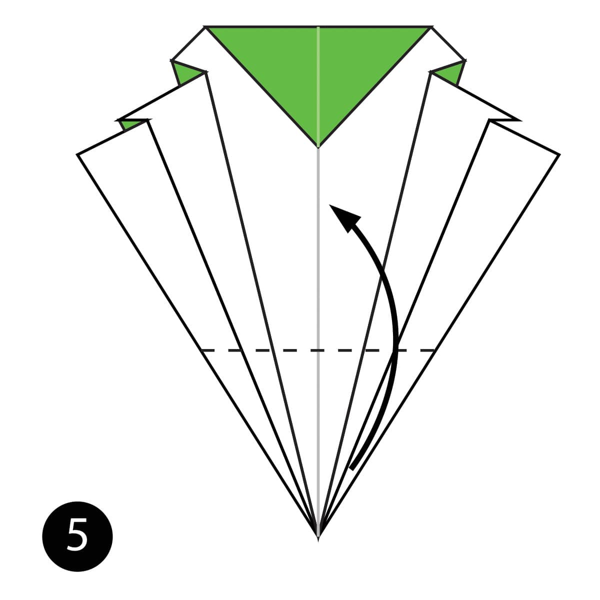
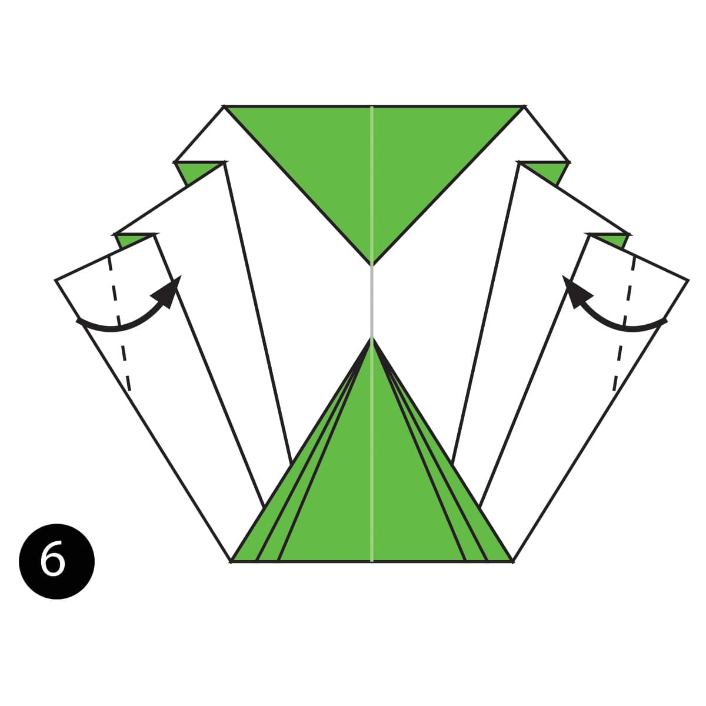
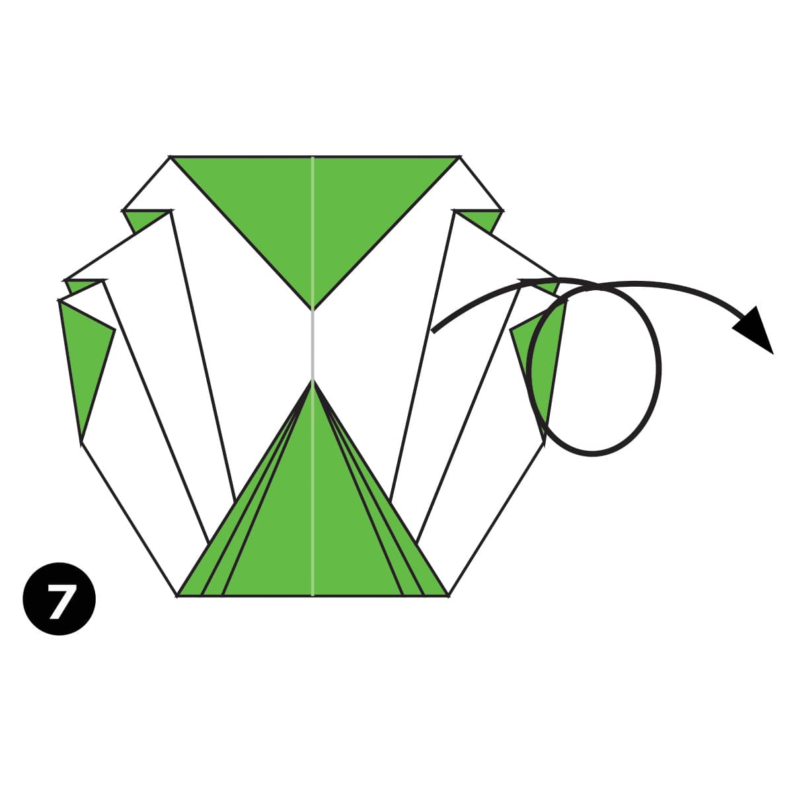
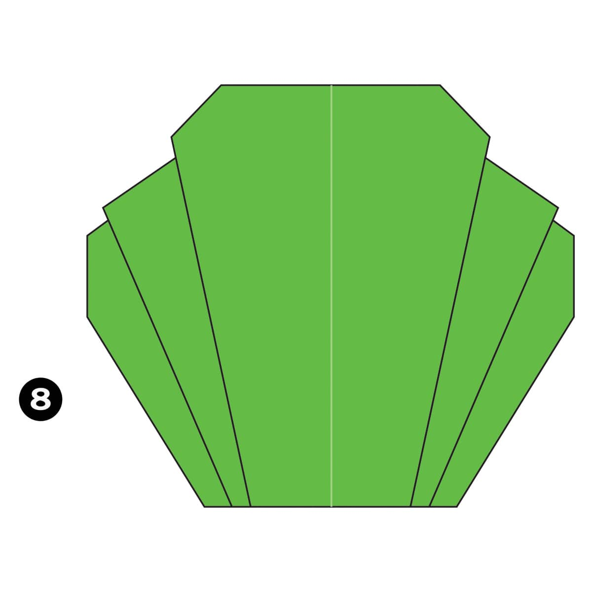

Step 1
Fold the paper in half and then unfold it.

Step 2
Make a Pleat Fold on both sides of the paper along the dotted lines.

Step 3
Make another Pleat Fold on both sides along the dotted lines.

Step 4
Fold the top of the paper down along the dotted line.

Step 5
Fold the bottom of the paper up along the dotted line.

Step 6
Fold the sides of the paper in along the dotted lines.

Step 7
Turn the paper over.

Completed
The completed origami cabbage.